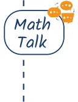

- A cricket coach schedules practice sessions that include different activities in a specific ratio — time for warm-up/cool-down : time for batting : time for bowling : time for fielding :: 3 : 4 : 3 : 5. If each session is 150 minutes long, how much time is spent on each activity?
- A school library has books in different languages in the following ratio — no. of Odiya books : no. of Hindi books : no. of English books :: 3 : 2 : 1. If the library has 288 Odiya books, how many Hindi and English books does it have?
- I have 100 coins in the ratio — no. of ₹10 coins : no. of ₹5 coins : no. of ₹2 coins : no. of ₹1 coins :: 4 : 3 : 2 : 1. How much money do I have in coins?
- Construct a triangle with sidelengths in the ratio 3 : 4 : 5. Will all the triangles drawn with this ratio of sidelengths be congruent to each other? Why or why not?

- Can you construct a triangle with sidelengths in the ratio 1 : 3 : 5? Why or why not?
Chapter 3 · Proportional Reasoning 2